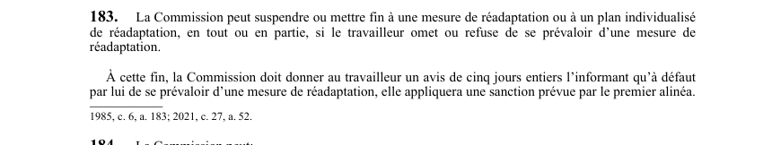

art-183-LATMP : suspension de la réadaptation
Un article du wiki ⚖️ Recueil législatif
🌐 LegisQuébec · 📄 PDF officiel (page 49)
Texte officiel : capture du PDF

Toucher l'image pour l'agrandir🔗 Ouvrir a cette page : LATMP.pdf : page 49 · texte a jour au 20 février 2024
📚 Source légale : 1985, c. 6, a. 183; 2021, c. 27, a. 52. · LégisQuébec
En bref
La Commission peut suspendre ou mettre fin à une mesure de réadaptation ou à un plan individualisé de réadaptation, en tout ou en partie, si le travailleur omet ou refuse de se prévaloir d'une mesure de réadaptation. À cette fin, la Commission doit donner au travailleur un avis de cinq jours entiers l'informant qu'à défaut par lui de se prévaloir d'une mesure de...
Voir aussi
- art. 181 · le coût de la réadaptation est assumé par la CNESST.
- art. 182 · la CNESST dispense elle-même les services professionnels prévus dans le cadre d'une mesure ou d'un plan individualisé de réadaptation, ou dirige le travailleur vers des personnes ou services appropriés.
- art. 184 · faculté : la CNESST peut développer et soutenir les activités de réadaptation, évaluer l'efficacité des politiques et programmes, mener des études et recherches, favoriser la réinsertion professionnelle du conjoint d'un travailleur décédé.
- 🔧 Modifié par : LMRSST art. 52 · insère une nouvelle disposition dans la LATMP.
- ↑ Loi : LATMP
Pages qui pointent ici (3)
- art-182-LATMP : dispensation des services de réadaptation Recueil législatif
- art-184-LATMP : pouvoirs de la CNESST en réadaptation Recueil législatif
- art-52-LMRSST : modifie l'art. 183 LATMP Recueil législatif